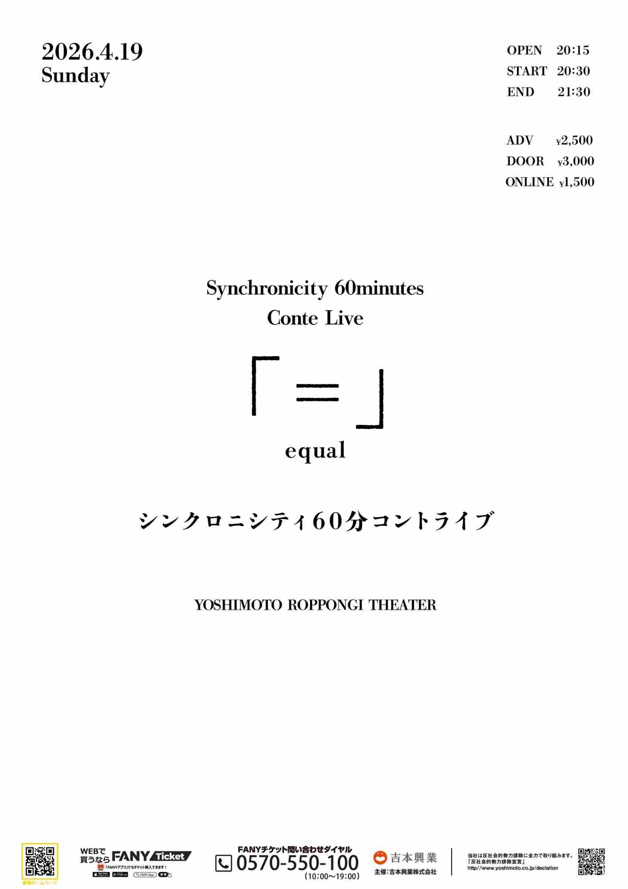
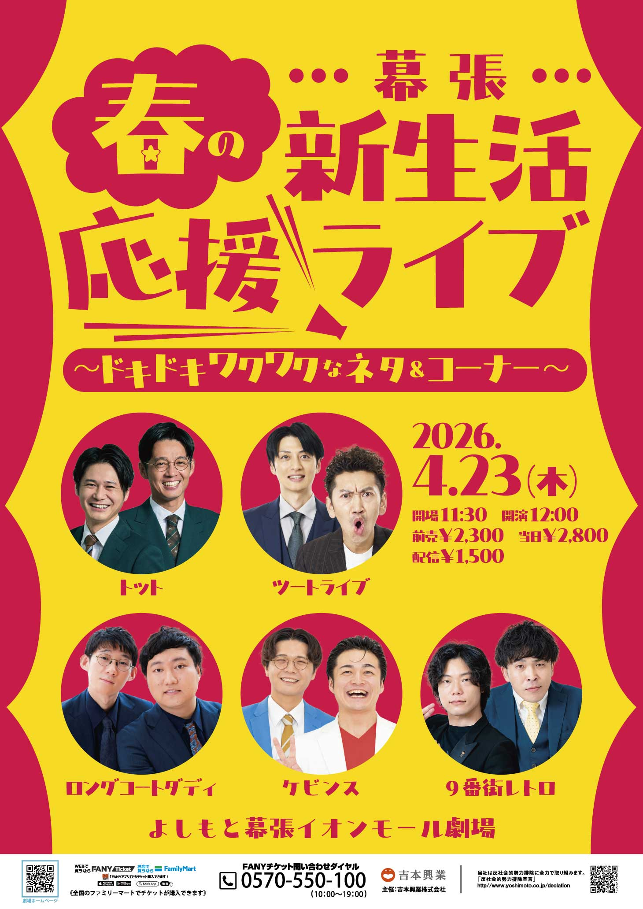
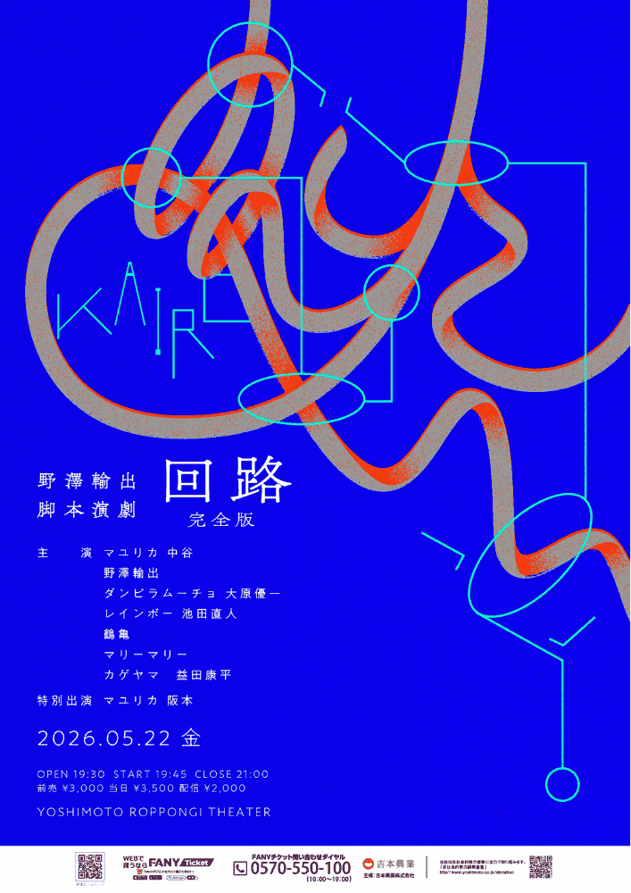

今後の公演（69件）
カラタチ前田がせっかくピンネタ作ったのでピン芸人の先輩のネタを見せてもらって、
日時2026/4/18(土) 開演 14:00
会場表現ライブハウス 池袋西口GEKIBA（東京都）
出演者カラタチ前田、小森園ひろし、九条ジョー、シンクロニシティ西野
グランドバトルEAST
日時2026/4/18(土) 開場 17:45 | 開演 18:00 | 終演 19:45
会場渋谷よしもと漫才劇場
出演者[ランキングバトルライブ]小森園ひろし／いぬ／スロッピ／TEAM近藤／まんじろう／からし蓮根／スクラップス／ダブルヒガシ／ドンデコルテ／ぶったま／アズーロ24／シンクロニシティ／太鵬／軟水／世界クジラ／三戸キャップ／ビューティフルトーキョーマンズ／MC：バイク川崎バイク
Pi●ク大喜利夜会 配信イッたら即終了LIVE
日時2026/4/18(土) 開演 19:00
会場LEFKADA新宿（東京都）
出演者はら（ゆにばーす）、大谷健太、野澤輸出、オダウエダ、ルシファー吉岡（マセキ芸能社）、紺野ぶるま（松竹芸能）、ななまがり森下
MC：ケビンス仁木恭平
グランドバトルEAST 第四部
日時2026/4/19(日) 開場 15:00 | 開演 15:15 | 終演 17:00
会場渋谷よしもと漫才劇場
出演者[ランキングバトルライブ]イチキップリン／アイロンヘッド／カーネーション／クロフネ／鶴亀／やさしいズ／滝音／まちるだ／九条ジョー／ケビンス／ぱろぱろ／赤嶺総理／11月のリサ／アメリカンBBチキン／生ファラオ／バリカタ友情飯／ZAZY／MC：キクチウソツカナイ。
シンクロニシティ60分コントライブ「＝」
日時2026/4/19(日) 開場 20:15 | 開演 20:30 | 終演 21:30
会場YOSHIMOTO ROPPONGI THEATER
出演者シンクロニシティ

幕張春の新生活応援ライブ～ドキドキワクワクなネタ＆コーナー～
日時2026/4/23(木) 開演 12:00
会場よしもと幕張イオンモール劇場
出演者トット／ツートライブ／ロングコートダディ／ケビンス／9番街レトロ

まくはり春のボケ祭り
日時2026/4/23(木) 開演 18:00
会場よしもと幕張イオンモール劇場
出演者ケビンス／そいつどいつ／9番街レトロ／ソマオ・ミートボール／イチゴ
ド桜のコーナーライブ「桜会」
日時2026/4/24(金) 開演 19:15
会場渋谷よしもと漫才劇場
出演者[企画ライブ]ド桜／からし蓮根／ケビンス 山口／シモリュウ シモタ／そいつどいつ／田津原理音／ぱろぱろ／ラニーノーズ／紅しょうが 熊元／MC：ミカボ

ワラケン体験クラブ「ソマオ・ミートボールのギャグ作り体験教室」
日時2026/4/25(土) 開演 16:00
会場ワラケンスタジオ（東京都）
出演者ソマオ・ミートボール
ゲスト：シンクロニシティ西野
漫開
日時2026/4/25(土) 開演 19:00
会場新宿シアターモリエール（東京都）
出演者ドーナツ・ピーナツ、ミカボ
ゲスト：シンクロニシティ、愛凛冴、ひつじねいり(マセキ芸能社)
中野なかるてぃんのイントロクイズネオ
日時2026/4/25(土) 開場 18:45 | 開演 19:00 | 終演 20:00
会場渋谷よしもと漫才劇場
出演者[企画ライブ]ナイチンゲールダンス／ケビンス／9番街レトロ／サンタモニカ／しんや

スマイルキング

気になる大喜利～この人たちの大喜利どんな感じ？～
日時2026/4/26(日) 開演 20:45
会場ルミネtheよしもと
出演者男性ブランコ 浦井／ゆにばーす 川瀬名人／ドンデコルテ 小橋／バッテリィズ 寺家／令和ロマン 松井ケムリ／シンクロニシティ 西野／MC：ヒューマン中村
俺たち！大喜利部
日時2026/4/27(月) 開演 19:00
会場渋谷よしもと漫才劇場
出演者[企画ライブ]シカゴ実業 山本／カゲヤマ 益田／しんちゃん／蛙亭 イワクラ／ケビンス 仁木／シモリュウ 前田／野澤輸出／ネルソンズ 岸健之助
天下一分武道会
日時2026/4/27(月) 開演 19:15
会場神保町よしもと漫才劇場
出演者[ネタライブ]からし蓮根／ケビンス 山口コンボイ／九条ジョー／オダウエダ／金魚番長／MC兼レフリー：ミカボ 土屋翼／他
やさしいズタイの「庭」
日時2026/4/27(月) 開場 20:45 | 開演 21:00 | 終演 22:00
会場神保町よしもと漫才劇場
出演者[企画ライブ]やさしいズ タイ／キンボシ 有宗先生／今井らいぱち／ケビンス／世間知らズ／ミカボ

幕張春のネタ＆コーナー
日時2026/4/28(火) 開演 12:00
会場よしもと幕張イオンモール劇場
出演者トレンディエンジェル／金属バット／コロコロチキチキペッパーズ／ケビンス
Kiwami極LIVE
日時2026/4/28(火) 開演 17:00
会場よしもと漫才劇場
出演者ゲスト:マユリカ／バッテリィズ／
祇園／アイラブ地球／武者武者／盆と正月／うただ／タレンチ／ときヲりぴーと／銀鬼／濱田祐太郎／まんじろう
ネルソンズとケビンスが若手芸人と仲良くなるためのライブ
日時2026/4/28(火) 開演 18:30
会場赤坂RED/THEATER（東京都）
出演者ネルソンズ、ケビンス、ドンデコルテ小橋、
ゼロカラン、家族チャーハン江頭、酒ゴメス、エグい速さ、き展、義理ギリ
囲碁将棋のオマエらには負けねえから！～後輩漫才師たちとガチネタバトル～
日時2026/4/28(火) 開演 19:30
会場ルミネtheよしもと
出演者ＭＣ：POISON GIRL BAND 吉田大吾／囲碁将棋／シシガシラ／カーネーション／ダイタク／ダンビラムーチョ／滝音／ミカボ／アメリカンBBチキン／エバース／ド桜／シンクロニシティ／ヨネダ2000／インテイク／ボブのコーラ

シシガシラ新ネタライブ ニョキニョキ
日時2026/4/29(水) 開演 19:00
会場GINZA ART BOX 7（東京都）
出演者シシガシラ
ゲスト：シンクロニシティ
ケビンストーク『バカと煙』
日時2026/4/30(木) 開場 20:45 | 開演 21:00 | 終演 22:00
会場渋谷よしもと漫才劇場
出演者[企画ライブ]ケビンス
男女コンビによるコントパーティー！
日時2026/5/2(土) 開場 17:00 | 開演 17:15 | 終演 18:15
会場YOSHIMOTO ROPPONGI THEATER
出演者蛙亭／シンクロニシティ／エレガント人生／世間知らズ
漫１０（まんてん）
日時2026/5/2(土) 開演 19:00
会場ルミネtheよしもと
出演者ミルクボーイ／トット／セルライトスパ／滝音／ミカボ／エバース／シンクロニシティ／イチゴ／大王／他
シンクロニシティ×兄弟ツーマンライブ「チョコレート・エアポート」
渋谷マンゲキよるの寄席ライブ
日時2026/5/4(月) 開場 18:45 | 開演 19:00 | 終演 20:00
会場渋谷よしもと漫才劇場
出演者[ネタライブ]今井らいぱち／カベポスター／ケビンス／そいつどいつ／ミカボ／9番街レトロ／ゼロカラン／他
渋谷よしもと漫才劇場 ゴールデンウィーク特別寄席
日時2026/5/5(火) 開場 10:45 | 開演 11:00 | 終演 12:00
会場渋谷よしもと漫才劇場
出演者[ネタライブ]ダンビラムーチョ／ドンデコルテ／マルセイユ／今井らいぱち／やさしいズ／ぱろぱろ／シンクロニシティ／照山おうちごはん／ゲスト：ガベジ／ニューヨーク／他
渋谷よしもと漫才劇場 ゴールデンウィーク特別寄席
日時2026/5/5(火) 開場 12:30 | 開演 12:45 | 終演 13:45
会場渋谷よしもと漫才劇場
出演者[ネタライブ]ダンビラムーチョ／ドンデコルテ／マルセイユ／今井らいぱち／やさしいズ／ぱろぱろ／シンクロニシティ／照山おうちごはん／ゲスト：ガベジ／ニューヨーク／他
ケビンス×ママタルト×パンプキンポテトフライ「ハイカロリー２」
日時2026/5/5(火) 開演 16:00
会場せたがやイーグレットホール(世田谷区民会館)（東京都）
出演者ケビンス、ママタルト（サンミュージック）、パンプキンポテトフライ（ホリプロコム）
ド桜のネタ咲き
素敵じゃないかの漫才グランドチャンピオン
日時2026/5/6(水) 開演 16:30
会場大宮ラクーンよしもと劇場
出演者素敵じゃないか／ソマオ・ミートボール／トット／すゑひろがりず／シシガシラ／ちょんまげラーメン／めぞん／シンクロニシティ
ベビンス
日時2026/5/6(水) 開場 20:15 | 開演 20:30 | 終演 21:30
会場神保町よしもと漫才劇場
出演者[企画ライブ]ケビンス
はるかぜに告ぐのメガ進化
日時2026/5/8(金) 開演 19:30
会場よしもと漫才劇場
出演者はるかぜに告ぐ／ケビンス／黒帯／九ノ段／MC:アイラブ地球 コウノ・オブ・ザ・イヤー
ごきげん会？ポポポポーン？
日時2026/5/9(土) 開演 18:00
会場よしもと漫才劇場
出演者うただ／ぎょうぶ／軟水／シンクロニシティ
TOKYO SHUCHAN COLLECTION 2026
日時2026/5/10(日) 開演 14:00
会場銀座ブロッサム（中央会館）ホール（東京都）
出演者蛙亭、カラタチ、kento fukaya、ZAZY、マユリカ、やさしいズ タイ、コットン、田津原理音、9番街レトロ、エルフ
ネタ中のどこかでお互いに愛してるって言わないといけないライブ
日時2026/5/10(日) 開場 18:45 | 開演 19:00 | 終演 20:00
会場神保町よしもと漫才劇場
出演者[企画ライブ]九条ジョー／ケビンス／世間知らズ／ド桜／大王
よしもと若手ネタの祭典！
日時2026/5/10(日) 開演 19:30
会場ルミネtheよしもと
出演者マルセイユ／キンボシ／ミカボ／シンクロニシティ／9番街レトロ／ゼロカラン／めぞん／照山おうちごはん／ナユタ／他
今井らいぱち・さや香新山 ピンネタライブ「シン・ゼロヒャク」
日時2026/5/11(月) 開場 19:00 | 開演 19:15 | 終演 20:15
会場神保町よしもと漫才劇場
出演者[企画ライブ]今井らいぱち／さや香 新山／MC：マルセイユ 津田康平／ゲスト審査員：やさしいズ／ケビンス／ニッポンの社長
東京グランド花月
日時2026/5/12(火) 開演 15:00
会場IMM THEATER
出演者西川きよし、博多華丸・大吉、ギャロップ、5GAP、サルゴリラ、金属バット、ミキ、マユリカ、他
＜吉本新喜劇＞
座長：アキ
島田珠代、末成映薫、島田一の介、ケン、大塚澪、野崎塁、レイチェル、信濃岳夫、他
東京グランド花月
日時2026/5/12(火) 開演 18:30
会場IMM THEATER
出演者西川きよし、博多華丸・大吉、ギャロップ、5GAP、サルゴリラ、金属バット、ミキ、マユリカ、他
＜吉本新喜劇＞
座長：アキ
島田珠代、末成映薫、島田一の介、ケン、大塚澪、野崎塁、レイチェル、信濃岳夫、他
五反田会～山口コンボイ入会フレンドパーク～
日時2026/5/12(火) 開演 20:30
会場よしもと幕張イオンモール劇場
出演者トット 多田／マルセイユ 津田／シシガシラ 浜中／CITY 小野／【入会志願者】山口コンボイ

渋谷よしもと漫才劇場 寄席SP
日時2026/5/13(水) 開場 16:45 | 開演 17:00 | 終演 18:15
会場渋谷よしもと漫才劇場
出演者[ネタ＆コーナーライブ]中田カウス 漫才のDENDO NEXT／蛙亭／さや香／ドンデコルテ／ナイチンゲールダンス／ヨネダ2000／スーパーサイズ・ミー／シンクロニシティ／インテイク／ゼロカラン／大王／すゑひろがりず
くらげ新ネタライブ「浮遊」
日時2026/5/13(水) 開場 19:00 | 開演 19:15 | 終演 20:15
会場渋谷よしもと漫才劇場
出演者[企画ライブ]くらげ／マルセイユ／kento fukaya／滝音／シンクロニシティ／ナイチンゲールダンス／インテイク
やさしいズタイpresents「強いカタチ」
日時2026/5/14(木) 開場 20:45 | 開演 21:00 | 終演 22:15
会場渋谷よしもと漫才劇場
出演者[企画ライブ]やさしいズ タイ／今井らいぱち／キンボシ／ダンビラムーチョ／ケビンス／バリカタ友情飯／金魚番長／他
LUMINE NETA JAM
日時2026/5/16(土) 開演 19:00
会場ルミネtheよしもと
出演者5GAP／ダイタク／ケビンス／カベポスター／シンクロニシティ／めぞん／イチゴ／他

LUMINE NETA JAM
日時2026/5/16(土) 開演 19:00
会場ルミネtheよしもと
出演者5GAP／ダイタク／ケビンス／カベポスター／シンクロニシティ／めぞん／イチゴ／他

かわいい後輩代表は僕です！～後輩芸人力王決定戦～
日時2026/5/17(日) 開演 14:30
会場大宮ラクーンよしもと劇場
出演者9番街レトロ／シンクロニシティ／兄弟／ナユタ／ビューティフルトーキョーマンズ
野澤輸出のカラオケ大宮便
日時2026/5/17(日) 開演 16:00
会場大宮ラクーンよしもと劇場
出演者野澤輸出／9番街レトロ／ナユタ／ケビンス
四分漫才結社
野澤輸出脚本演劇「回路」完全版
日時2026/5/22(金) 開演 19:45
会場YOSHIMOTO ROPPONGI THEATER
出演者主演：マユリカ 中谷／野澤輸出／ダンビラムーチョ 大原／レインボー 池田／鶴亀／マリーマリー／カゲヤマ 益田／特別出演：マユリカ 阪本

おもろいぜトゥエルブ
日時2026/5/23(土) 開演 15:00
会場雷5656会館 ときわホール（東京都）
出演者華山、からし蓮根、ドーナツ・ピーナツ、空前メテオ、ケビンス、イチゴ
kento fukayaのゆるいぜ！旅マウス！
日時2026/5/24(日) 開演 14:00
会場東別院テラスホール（愛知県）
出演者kento fukaya
ダンビラムーチョ、今井らいぱち、カベポスター、ケビンス、たくろう
山添展
日時2026/5/24(日) 開演 18:30
会場有楽町よみうりホール（東京都）
出演者山添寛
山﨑ケイ（相席スタート）、山名文和（アキナ）、じろう（シソンヌ）、や団（SMA）、マユリカ、きしたかの（マセキ芸能社）、レインボー、江角怜音・小澤愛実(≒JOY)、にゃんぞぬデシ（シンガーソングライター）
エピソードダウト
日時2026/5/25(月) 開演 19:00
会場よしもと福岡 大和証券劇場
出演者ゲスト：シンクロニシティ／MC：ザ・ローリングモンキー ムサシ／メタルラック 美意識タカシ／太宰 あやむ／かば鴉 イースト亮次郎／喜喜かいばしら／パンたべる パン
1993年5月25日
日時2026/5/25(月) 開演 19:15
会場渋谷よしもと漫才劇場
出演者[企画ライブ]ケビンス 山口コンボイ／田津原理音
漫才漫ション9兆1千5号室
スマイルキング
世間知らズの新帝国
日時2026/5/27(水) 開場 20:45 | 開演 21:00 | 終演 22:00
会場神保町よしもと漫才劇場
出演者[企画ライブ]世間知らズ／ケビンス／ヨネダ2000／けいごステファニー
海賊バレエ
俺たち！大喜利部
日時2026/5/29(金) 開演 21:00
会場渋谷よしもと漫才劇場
出演者[企画ライブ]MC：シモリュウ 前田／シカゴ実業 山本／ケビンス 仁木／野澤輸出／他
GAG新ネタライブ「MENS JACKET COAT NEED HOMES，TOO」
日時2026/5/30(土) 開演 12:00
会場大宮ラクーンよしもと劇場
出演者GAG／囲碁将棋／トット／タモンズ／ジェラードン／シンクロニシティ
（S）スーパー（J）ジョイフルコーナーライブ
日時2026/5/30(土) 開演 14:00
会場大宮ラクーンよしもと劇場
出演者GAG／囲碁将棋／トット／タモンズ／ジェラードン／シンクロニシティ
西野君、今の僕を見てくれないか？～【大宮お笑いタッグマッチ】
日時2026/5/30(土) 開演 16:00
会場大宮ラクーンよしもと劇場
出演者GAG／囲碁将棋／トット／タモンズ／ジェラードン／シンクロニシティ
がっぷり四つ！かみちぃ＆よしおかさんMCのダサ反省会
日時2026/5/30(土) 開演 18:00
会場大宮ラクーンよしもと劇場
出演者GAG／囲碁将棋／トット／タモンズ／ジェラードン／シンクロニシティ
神回サミット
日時2026/5/31(日) 開演 21:00
会場渋谷よしもと漫才劇場
出演者[企画ライブ]ケビンス 仁木／他
滝音×マユリカの「夢夢夢らいぶ」
日時2026/6/15(月) 開演 19:00
会場ルミネtheよしもと
出演者滝音／マユリカ／他ゲスト
kento fukayaのゆるいぜ！旅マウス！
日時2026/6/19(金) 開演 19:00
会場ルミネtheよしもと
出演者kento fukaya／ビスケットブラザーズ／マユリカ／さや香／ダブルヒガシ

道楽邂逅～June～
日時2026/6/23(火) 開演 20:15
会場ルミネtheよしもと
出演者ななまがり／ZAZY／エバース／シンクロニシティ／他ゲスト
今田耕司のLet's！コメディーショー！！in福岡
日時2026/6/27(土) 開演 13:00
会場福岡県立ももち文化センター 大ホール（福岡県）
出演者脚本・構成：久馬歩
コメディーショー組：今田耕司、藤井隆、椿鬼奴、ハロー植田、スクールゾーン、ガンバレルーヤ
ネタ組：見取り図、マユリカ、エバース